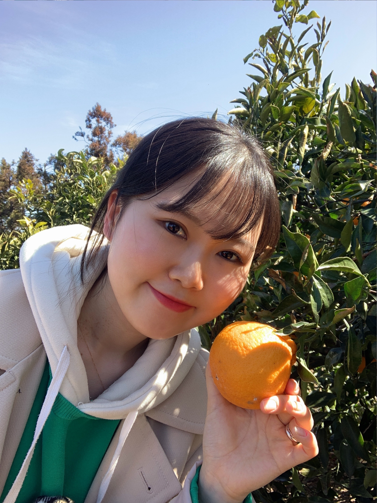

책임감과 실행력을 겸비한 개발자,
김미리입니다.
Front-End Junior Developer
Skills, 기술
HTML
CSS
Bootstrap
TailwindCSS
Git
GitHub
JavaScript
React
Storybook
Jira
Styled-Component
Introduce, 소개
안녕하세요.
책임감과 실행력 그리고 꾸준한 성장을 지향하는 개발자 김미리입니다.
저는 어떤 일을 시작할 때, ~~~
아직 배울 것들이 많지만 그만큼 성장 가능성도 무궁무진하다고 생각합니다.
스스로를 되돌아보기 위해 회고록을 작성하고, 더 나은 방법과 커뮤니케이션에 대해 고민합니다.
홀로 문제를 해결하는 것도 즐겨 하지만, 적절한 톤앤 매너를 가지고 함께 일하는 것을 더 애정 합니다.
Project, 프로젝트
HTML
CSS
HTML
CSS
JavaScript
HTML
CSS
JavaScript
코로나로 인해 집에서 식물을 기르는 사람들이 급증하는데 아이디어를 얻어 만들게 되었습니다.
식물을 키우면서 얻은 팁과 정보를 공유하는 것을 중심으로, 식물을 키우는데 필요한 것들을 구매하고, 최저가 상품을 찾아주는 기능 구현 예정입니다.
Storybook을 이용하여 아톰을 구현하고, React와 Styled-Component를 사용하여 페이지를 구현하였습니다.
Jira를 사용하여 팀 일정을 정리하였습니다.
React Styled-Component Storybook Jira
식물을 키우면서 얻은 팁과 정보를 공유하는 것을 중심으로, 식물을 키우는데 필요한 것들을 구매하고, 최저가 상품을 찾아주는 기능 구현 예정입니다.
Storybook을 이용하여 아톰을 구현하고, React와 Styled-Component를 사용하여 페이지를 구현하였습니다.
Jira를 사용하여 팀 일정을 정리하였습니다.
React Styled-Component Storybook Jira
Activites, 활동
모던 자바스크립트 튜토리얼 영-한 번역에 참여하였습니다.
Git GitHub
Git GitHub
김창준님의 '함께 자라기' 책을 읽으며 모임원들과 의견을 공유하였습니다.
이전에는 책을 읽고 하나의 의견만 낼 수 있었다면, 이후에는 다각도로 생각을 하고 뚜렷하게 의견을 낼 수 있습니다. 또, 다른 의견을 낸 타인의 생각을 더 좋은 방향으로 존중할 수 있습니다.
Notion
이전에는 책을 읽고 하나의 의견만 낼 수 있었다면, 이후에는 다각도로 생각을 하고 뚜렷하게 의견을 낼 수 있습니다. 또, 다른 의견을 낸 타인의 생각을 더 좋은 방향으로 존중할 수 있습니다.
Notion
이제 막 개발을 시작한 사람들을 대상으로 비 온 뒤 단단해지는 땅처럼 : 신입 개발자들의 학습과 성장 이야기'를 주제로 연사를 발표하였습니다.
'스터디' 파트와 '조급한 마음을 다스리는 방법' 파트를 맡아 발표하였습니다.
GitHub
'스터디' 파트와 '조급한 마음을 다스리는 방법' 파트를 맡아 발표하였습니다.
GitHub
활동 4. JavaScript 동기 비동기 책
(집필중)
기간 : 22년 7월 ~ 8월 중순
(집필중)
기간 : 22년 7월 ~ 8월 중순
자바스크립트 동기 비동기 관련 책을 집필중이며, '자바스크립트 엔진의 동기적 실행'파트를 담당하고 있습니다.
8월 중순 이후 출간 예정입니다.
8월 중순 이후 출간 예정입니다.
Experience, 경력
2022. 3. 28. ~ 8. 1.
멋쟁이 사자처럼 Front-End School 2기 수료 예정.